자동차 · 금속 부품 · AI 비전검사
자동차 부품 실링·홀 주변 AI 외관검사 적용 검토 사례
HIKROBOT AI 딥러닝 스마트카메라
하이크로봇 스마트카메라로 실링의 끊김·형상 이상과 홀 주변 결함을 검토한 사례입니다. 샘플 검사에서 정상·이상 영역의 검출 결과와 ROI 적용 방식을 확인했습니다.
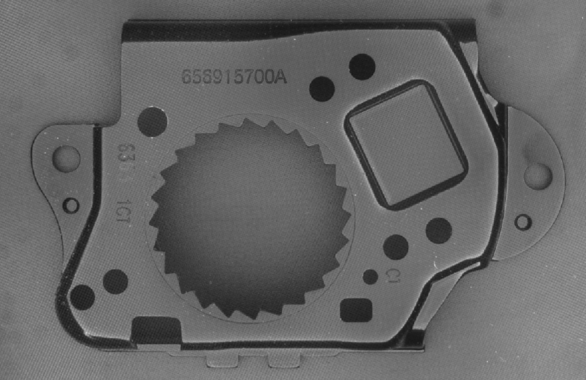
Project Summary
프로젝트 핵심 구성
- 산업
- 자동차 · 금속 부품
- 검사·자동화 대상
- 자동차 부품 실링·홀 주변 AI 외관검사
- 주요 기술
- HIKROBOT AI 딥러닝 스마트카메라
- 적용 구분
- 샘플 검사·적용 검토
Project Photos
실제 구축 현장 및 검사 화면
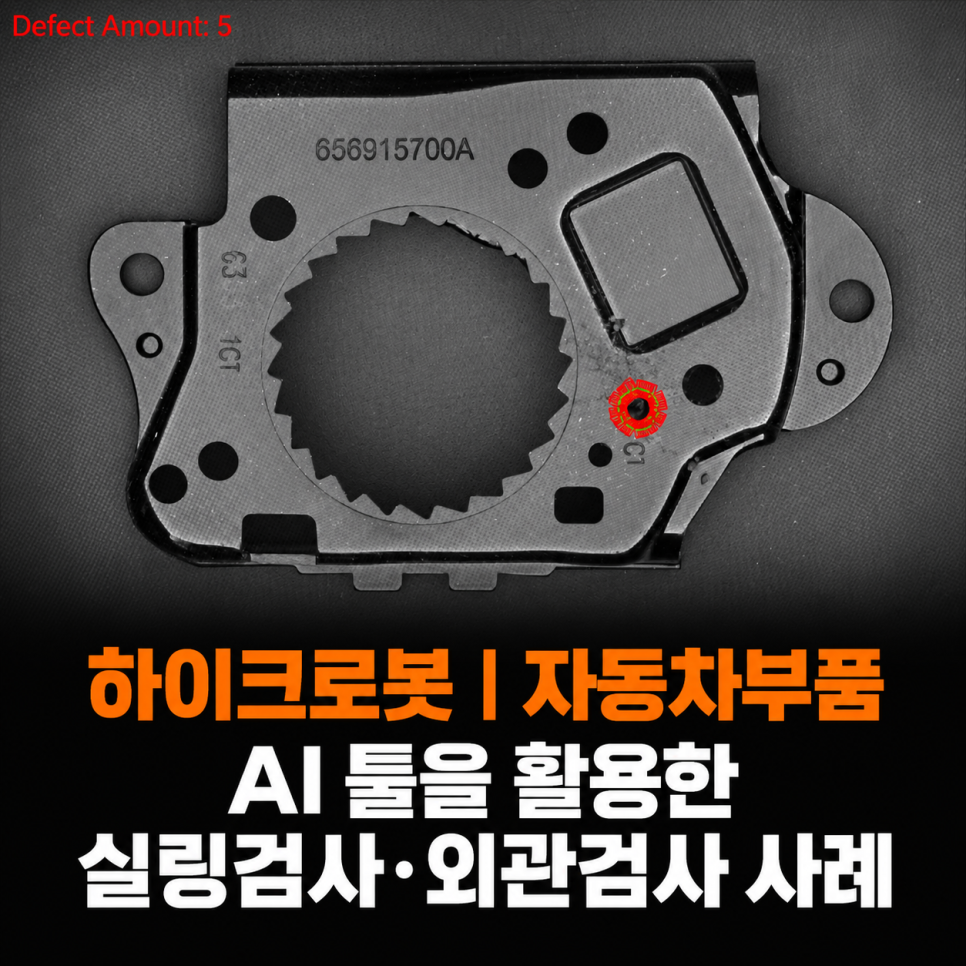
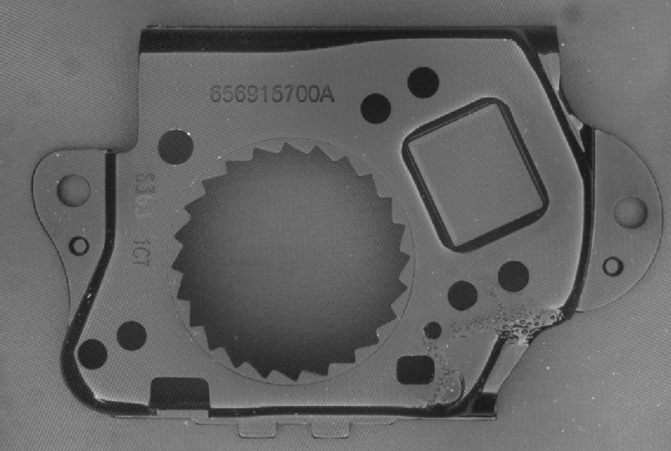
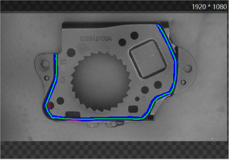
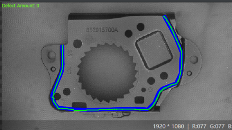
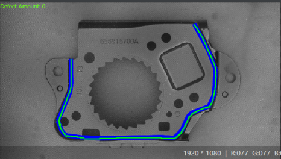
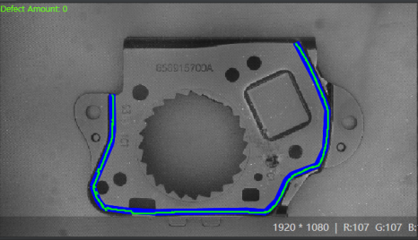
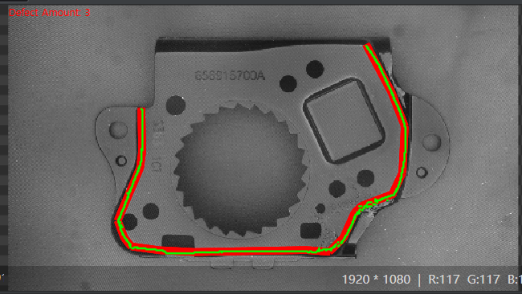
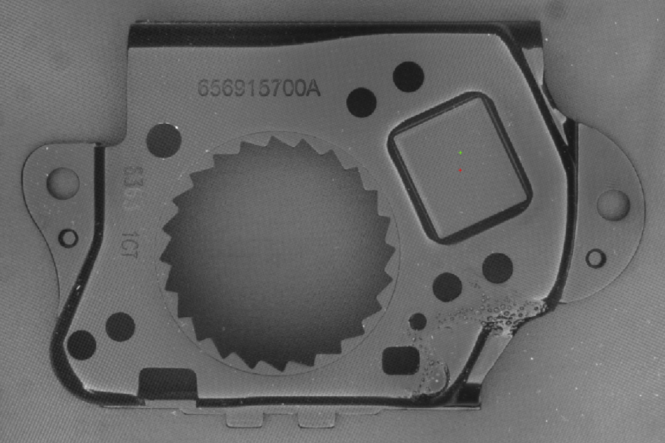
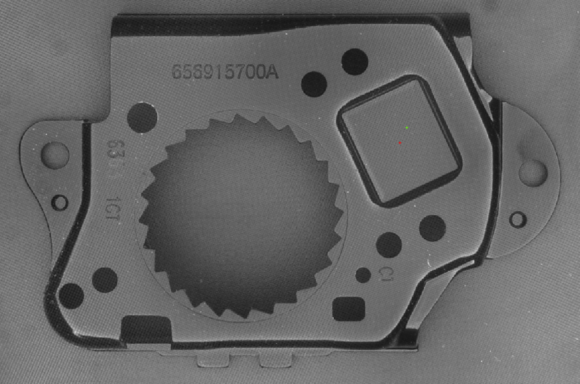
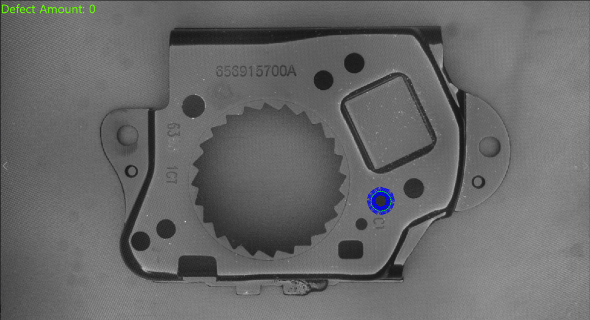
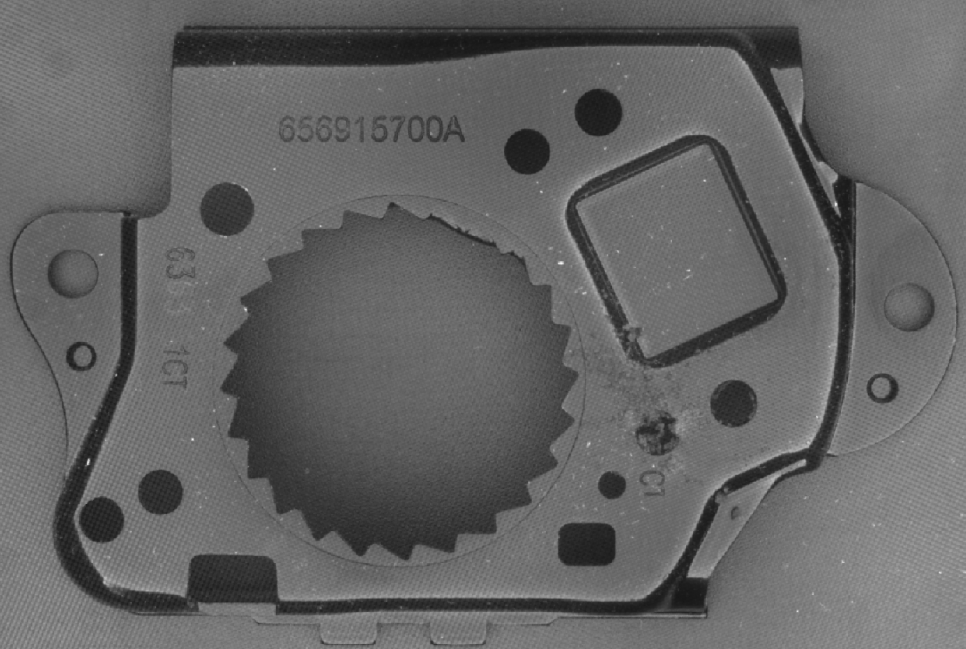
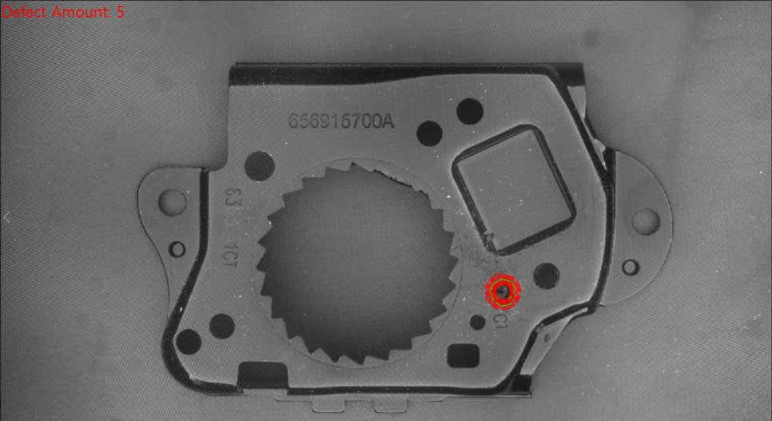
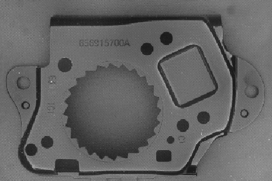
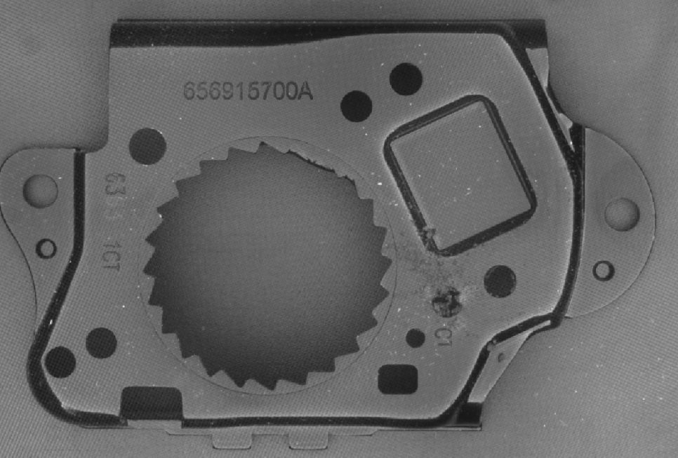
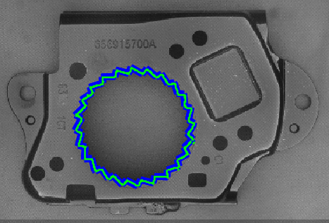
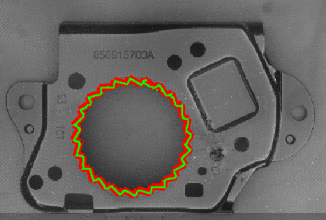
01 · Overview
프로젝트 개요
하이크로봇 스마트카메라로 실링의 끊김·형상 이상과 홀 주변 결함을 검토한 사례입니다. 샘플 검사에서 정상·이상 영역의 검출 결과와 ROI 적용 방식을 확인했습니다.
02 · Problem
프로젝트에서 해결해야 했던 문제
실링 정상 편차와 불량 구분 / 복잡한 외곽 형상 / 홀 주변 ROI 검사 조건에 대응해야 했습니다.
- 실링 정상 편차와 불량 구분
- 복잡한 외곽 형상
- 홀 주변 ROI 검사
03 · System
검사·자동화 시스템 구성
하이크로봇 스마트카메라로 실링의 끊김·형상 이상과 홀 주변 결함을 검토한 사례입니다. 샘플 검사에서 정상·이상 영역의 검출 결과와 ROI 적용 방식을 확인했습니다.
정상·불량 이미지 학습
이상 영역 검출
샘플 결과 검토
04 · Inspection
프로젝트 개요
이번 프로젝트의 검사 대상은 자동차에 적용되는 금속 부품입니다.
한 제품에서 서로 다른 두 가지 외관검사를 검토했습니다.
첫 번째는 제품 외곽을 따라 형성된 실링의 이상 유무 검사, 두 번째는 제품의 특정 홀 주변에서 발생하는 외관 이상 검출입니다.
주요 검사 항목은 다음과 같습니다.
실링 끊김 및 누락
실링 형상 이상
실링 위치 이탈
홀 주변 외관 이상
정상 형상과 다른 돌출 및 잔여물
이물 및 비정상 영역
일반적인 규칙만으로 모든 불량 형태를 정의하기보다 정상 상태와 불량 상태의 특징을 AI가 학습하여 이상 영역을 검출할 수 있는지 검토했습니다.
05 · Inspection
자동차부품 실링 검사
자동차 부품에는 방수, 방진, 기밀 유지, 진동 방지 및 부품 간 밀폐 등을 위해 다양한 형태의 실링재가 적용됩니다.
실링 검사에서 중요한 것은 단순히 실링재가 있는지 없는지만 확인하는 것이 아닙니다.
제품 외곽을 따라 실링이 정상적으로 이어져 있는지, 중간에 끊긴 부분은 없는지, 정상적인 도포 위치를 벗어나지는 않았는지 등을 함께 확인해야 합니다.
06 · Inspection
위 이미지는 정상 제품의 실링 검사 결과입니다.
제품 외곽을 따라 형성된 실링 영역을 검사했으며 정상 기준을 벗어나는 결함이 없어 Defect Amount: 0으로 판정되었습니다.
07 · Inspection
위 이미지는 실링 이상이 발생한 제품입니다.
정상 제품에서 학습한 실링 형상과 비교하여 비정상적인 영역을 검출하고, 이상이 발생한 위치를 표시합니다.
사진과 같이 제품의 외곽 형상이 단순한 직선이나 원형이 아니라 여러 방향으로 변화하기 때문에 검사 영역 역시 복잡한 형상을 가지고 있습니다.
이러한 제품에서는 단순히 일정한 폭이나 밝기만 기준으로 검사하는 것보다 정상적인 실링의 형태와 비정상적인 변화를 구분하는 방식이 중요합니다.
08 · Inspection
일반적인 실링 검사에서 발생할 수 있는 문제
실링 검사는 머신비전에서 많이 적용되는 검사 중 하나입니다.
조건이 단순하다면 Threshold, Blob, Edge 등의 일반적인 영상처리 도구를 이용해서도 충분히 검사할 수 있습니다.
하지만 실제 생산현장에서는 다음과 같은 변수가 발생할 수 있습니다.
실링 폭의 정상적인 편차
도포 위치의 미세한 변화
제품 자체의 위치 및 각도 변화
실링 표면의 밝기 변화
금속 표면의 반사
실링 시작점과 끝점의 형상 차이
곡선 및 코너 영역에서 발생하는 형상 변화
정상적인 도포 편차와 실제 불량의 구분
룰베이스 방식에서는 이러한 조건을 각각 수치화하여 허용범위를 설정해야 합니다.
조건을 너무 엄격하게 설정하면 정상적인 실링 편차까지 NG로 판정할 수 있고, 반대로 허용범위를 크게 설정하면 실제 실링 불량을 놓칠 가능성이 있습니다.
이번 검토에서는 이러한 정상 편차와 실제 이상 영역을 구분하기 위해 하이크로봇 AI 딥러닝 기반 외관검사를 적용했습니다.
09 · Inspection
하이크로봇 딥러닝을 이용한 실링 불량 검출
이번 검사에서는 정상 제품과 불량 제품의 이미지를 이용하여 AI 모델을 학습하고, 실링 영역에서 정상적인 형상과 다른 부분을 검출하도록 구성했습니다.
딥러닝 검사의 장점은 모든 불량의 조건을 작업자가 하나씩 수치로 정의하지 않아도 된다는 점입니다.
예를 들어 실링 불량은 항상 동일한 모양으로 발생하지 않습니다.
어떤 제품에서는 실링이 짧게 끊어질 수 있고, 다른 제품에서는 일부가 얇아지거나 정상 위치에서 벗어날 수 있습니다.
따라서 단순히 하나의 길이, 폭 또는 밝기 기준만으로 모든 불량을 정의하기 어려울 수 있습니다.
AI 딥러닝은 학습된 정상·불량 이미지의 특징을 바탕으로 이러한 비정형적인 변화를 분석할 수 있습니다.
이번 프로젝트에서는 이를 이용해 실링 끊김, 누락, 형상 이상 및 정상 상태와 다른 영역을 자동으로 검출할 수 있는지 확인했습니다.
10 · Inspection
홀 주변 외관 결함 검사
실링 검사와 함께 제품의 특정 위치에 대한 외관검사도 진행했습니다.
이번에는 제품 전체를 검사하는 것이 아니라 특정 원형 홀 주변을 검사 영역으로 지정하고 정상 상태와 다른 외관 이상이 존재하는지 검사했습니다.
11 · Inspection
위 이미지는 정상 상태입니다.
원형 홀 주변을 검사 영역으로 설정했으며 비정상적인 영역이 발견되지 않아 Defect Amount: 0으로 판정되었습니다.
12 · Inspection
불량 제품에서는 동일한 위치에서 정상 형상과 다른 영역이 검출되었으며 Defect Amount: 5로 판정되었습니다.
이처럼 검사할 위치가 명확하다면 제품 전체를 대상으로 결함을 찾기보다 필요한 영역만 ROI로 제한하여 검사할 수 있습니다.
주변에 존재하는 홀, 문자, 가공 형상 등 검사와 관계없는 요소의 영향을 줄이고 실제로 확인해야 하는 영역에 검사 조건을 집중할 수 있습니다.
이번 샘플에서는 특정 홀 주변의 외관 이상을 대상으로 검토했지만 동일한 방식은 검사 대상에 따라 다음과 같은 다양한 자동차 부품 외관검사에 응용할 수 있습니다.
이물 검사
버(Burr) 검사
가공 잔여물 검사
돌출 검사
찍힘 검사
스크래치 검사
파손 검사
조립 불량 검사
부품 누락 검사
표면 결함 검사
따라서 AI 외관검사는 특정한 하나의 불량 명칭에 한정하기보다 정상 상태에서 벗어난 비정형적인 외관 변화를 검출해야 하는 검사에서 활용할 수 있습니다.
13 · Inspection
왜 AI 딥러닝을 적용했을까요?
모든 자동차 부품 외관검사에 딥러닝이 필요한 것은 아닙니다.
검사 기준이 명확하고 정상과 불량의 차이가 일정하다면 Blob, Edge, Pattern Matching, 측정 등의 일반적인 머신비전 도구를 사용하는 것이 더 간단하고 효율적일 수 있습니다.
예를 들어 특정 부품의 유무를 검사하거나 일정한 위치의 홀 직경을 측정하는 작업이라면 굳이 AI를 적용할 필요가 없습니다.
반면 이번 실링 및 외관검사와 같이 정상 상태에서도 어느 정도 형상 변화가 존재하고, 불량의 모양과 발생 위치가 일정하지 않은 검사에서는 고정된 기준만으로 판정 조건을 만드는 것이 어려울 수 있습니다.
딥러닝은 다음과 같은 검사에 활용하기 좋습니다.
정상 제품에도 일정한 형상 편차가 존재하는 검사
불량의 크기와 형태가 일정하지 않은 검사
복잡한 형상 내부에서 이상 부분을 찾아야 하는 검사
룰베이스 조건이 지나치게 많아지는 검사
제품 표면의 정상적인 변화와 실제 결함을 구분해야 하는 검사
실링, 접착제처럼 도포 형상이 완전히 동일하지 않은 검사
따라서 이번 프로젝트에서는 기존 영상처리 도구만으로 많은 조건을 설정하기보다 AI가 정상과 비정상 영역의 특징을 학습하는 방식으로 검사 가능성을 검토했습니다.
14 · Inspection
스마트카메라 딥러닝을 적용한 이유
AI 외관검사라고 하면 일반적으로 고성능 GPU가 장착된 산업용 PC와 카메라를 조합한 PC 비전 시스템을 생각하기 쉽습니다.
물론 여러 대의 고해상도 카메라를 동시에 처리하거나 매우 큰 딥러닝 모델이 필요한 경우에는 PC 비전 방식이 유리합니다.
하지만 카메라 수가 많지 않고 필요한 AI 모델을 스마트카메라 내부에서 처리할 수 있다면 시스템 구성을 보다 단순하게 만들 수 있습니다.
이번 프로젝트에서는 하이크로봇 AI 딥러닝 스마트카메라를 이용하여 학습된 모델의 추론을 카메라 내부에서 수행하는 방식을 검토했습니다.
스마트카메라 방식은 다음과 같은 장점이 있습니다.
별도의 고성능 GPU PC 구성 부담 감소
카메라 내부에서 영상 촬영과 AI 추론 수행
제어반 및 설치 공간 절감
시스템 배선 단순화
PLC와 OK·NG 결과 신호 연동 가능
생산라인 자동화 설비와 연동 용이
검사 결과 및 불량 위치 확인 가능
다만 스마트카메라에서 처리할 수 있는 딥러닝 모델과 검사 속도에는 하드웨어에 따른 제한이 있기 때문에 실제 적용 전에는 반드시 카메라 해상도, 검사 영역, 최소 결함 크기 및 생산 택타임을 함께 검토해야 합니다.
15 · Inspection
실링검사에서 중요한 것은 조명입니다
AI를 적용한다고 해서 광학 조건의 중요성이 낮아지는 것은 아닙니다.
오히려 딥러닝 역시 카메라가 촬영한 영상을 기반으로 판단하기 때문에 정상과 불량의 차이가 안정적으로 표현되는 영상을 만드는 것이 중요합니다.
특히 자동차 금속부품은 표면 반사가 강하기 때문에 조명 방향에 따라 제품의 밝기가 크게 달라질 수 있습니다.
실링 역시 재질에 따라 정반사가 발생하거나 주변 금속 표면과 명암 차이가 작게 나타날 수 있습니다.
따라서 실제 자동차 부품 실링검사를 구성할 때는 다음과 같은 조건을 함께 검토해야 합니다.
실링과 금속 표면의 명암 차이
금속 표면의 난반사 및 정반사
카메라와 조명의 설치 각도
검사해야 하는 최소 실링 불량 크기
제품의 위치 및 높이 편차
검사 영역의 크기
카메라 해상도
렌즈 초점거리와 WD
생산라인의 검사 택타임
AI 학습 데이터뿐만 아니라 이러한 광학 조건이 안정적으로 구성되어야 실제 양산에서도 일관된 검사 결과를 얻을 수 있습니다.
16 · Inspection
AI 학습 데이터도 중요합니다
딥러닝 검사에서는 카메라의 성능만큼 학습 데이터의 구성이 중요합니다.
정상 제품 몇 장과 불량 제품 몇 장만으로 초기 테스트에서는 좋은 결과가 나올 수 있지만, 실제 생산라인에서는 훨씬 다양한 조건이 발생할 수 있습니다.
자동차 부품 실링검사의 경우 다음과 같은 데이터를 함께 확보하는 것이 좋습니다.
정상적인 실링 폭 변화
정상적인 도포 위치 편차
곡선과 코너 부분의 정상 실링
실링 시작점과 끝점
다양한 형태의 실링 끊김
실링 누락
도포량이 부족하거나 과도한 제품
제품 위치가 조금씩 달라진 이미지
조명 밝기가 미세하게 변화한 조건
한계 기준에 가까운 OK·NG 샘플
특히 실제 양산에서 발생한 오검출과 미검출 이미지는 AI 모델을 개선하는 데 중요한 데이터가 됩니다.
초기 모델 구축 이후에도 실제 생산 데이터를 검토하고 필요한 샘플을 추가하여 학습하는 과정을 통해 검사 안정성을 높일 수 있습니다.
17 · Inspection
자동차 산업에서 적용 가능한 머신비전 검사
이번 프로젝트는 자동차 부품의 실링 및 특정 영역의 외관 결함을 대상으로 진행했지만 자동차 생산공정에서는 매우 다양한 머신비전 검사가 사용됩니다.
예를 들어 다음과 같은 검사에 적용할 수 있습니다.
실링 검사
실런트(Sealant) 검사
접착제 도포 검사
가스켓 검사
O-Ring 검사
버(Burr) 검사
이물 검사
스크래치 검사
찍힘 검사
표면 결함 검사
가공 상태 검사
홀 위치 및 크기 검사
부품 유무 검사
조립 상태 검사
커넥터 핀 검사
볼트 및 너트 체결 검사
문자 OCR·OCV 검사
바코드 및 QR코드 판독
자동차 전장부품 외관검사
EV 배터리 부품 검사
검사 대상과 불량 형태가 명확한 경우에는 일반적인 룰베이스 머신비전을 적용하고, 불량 형태가 복잡하거나 정상 편차가 큰 경우에는 AI 딥러닝을 적용하는 방식으로 시스템을 구성할 수 있습니다.
중요한 것은 무조건 AI를 사용하는 것이 아니라 실제 제품과 불량 샘플을 확인한 후 가장 적합한 검사 방식을 선택하는 것입니다.
18 · Inspection
프로젝트 적용 효과
이번 검토를 통해 자동차 부품의 서로 다른 외관검사를 하나의 AI 머신비전 방식으로 대응할 수 있는 가능성을 확인했습니다.
✔ 자동차 부품 실링 상태 자동검사
✔ 실링 끊김 및 형상 이상 검출
✔ 특정 홀 주변 외관 결함 검사
✔ 정상 형상과 다른 비정상 영역 검출
✔ 하이크로봇 AI 딥러닝 적용
✔ 스마트카메라 내부 AI 추론
✔ 불규칙한 형태의 외관 불량 대응
✔ 검사 영역별 ROI 설정
✔ OK·NG 자동 판정
✔ PLC 및 생산설비 연동 가능
✔ 자동차 부품 생산라인 검사 자동화
실제 검출 성능은 제품의 재질, 실링 상태, 최소 불량 크기, 촬영 범위, 조명 환경 및 학습 데이터에 따라 달라질 수 있기 때문에 양산 적용 전 실제 정상·불량 샘플을 이용한 검증이 필요합니다.
19 · Inspection
적용 시 고려사항
이번 프로젝트는 하이크로봇 스마트카메라의 AI 딥러닝 기능을 활용하여 자동차 부품의 실링 상태와 홀 주변 외관 결함을 검사한 머신비전 검토 사례입니다.
실링과 같이 정상 상태에서도 일정한 형상 편차가 존재하고 불량 형태가 일정하지 않은 검사에서는 모든 조건을 룰베이스로 정의하는 것이 복잡해질 수 있습니다.
이번 검사에서는 AI 딥러닝을 이용해 정상적인 실링 형상과 이상 영역을 구분하고, 특정 홀 주변에서도 정상 상태와 다른 외관 결함을 검출하도록 구성했습니다.
자동차 부품의 외관검사는 제품마다 요구조건이 크게 다릅니다.
실링검사, 접착제검사, 가스켓검사, 버검사, 이물검사, 스크래치검사, 조립검사 등 검사 목적에 따라 필요한 해상도와 광학 조건, 영상처리 방식 역시 달라집니다.
ASPEC은 자동차, 자동차 전장, EV 배터리, 전자부품, 제약·바이오, 식품, 물류 등 다양한 제조현장을 대상으로 머신비전 시스템, AI 딥러닝 외관검사, 스마트카메라 검사, OCR·OCV, 바코드 판독 및 로봇 비전 프로젝트를 수행하고 있습니다.
검사하려는 제품과 정상·불량 샘플, 최소 검출 크기 및 생산 택타임을 함께 검토한 후 현장 조건에 적합한 카메라, 렌즈, 조명과 검사 방식을 제안해 드립니다.
위와 같은 고민이 있으시다면 ASPEC이 다양한 머신비전 구축 경험을 바탕으로 최적의 자동 검사 솔루션을 제안해 드리겠습니다.
Operation
현장 적용과 운영 조건
하이크로봇 스마트카메라로 실링의 끊김·형상 이상과 홀 주변 결함을 검토한 사례입니다. 샘플 검사에서 정상·이상 영역의 검출 결과와 ROI 적용 방식을 확인했습니다.
- 실링 정상 편차와 불량 구분
- 복잡한 외곽 형상
- 홀 주변 ROI 검사
Result
검토 결과
- 자동차 부품 실링 상태 자동검사
- 실링 끊김 및 형상 이상 검출
- 특정 홀 주변 외관 결함 검사
- 정상 형상과 다른 비정상 영역 검출
- 하이크로봇 AI 딥러닝 적용
- 스마트카메라 내부 AI 추론
- 불규칙한 형태의 외관 불량 대응
- 검사 영역별 ROI 설정
- OK·NG 자동 판정
- PLC 및 생산설비 연동 가능
- 자동차 부품 생산라인 검사 자동화
Engineering
ASPEC의 머신비전 시스템 설계 방식
검사 대상의 재질과 형상, 설치 공간과 생산 조건에 맞춰 장비·광학·소프트웨어와 설비 연동을 함께 검토합니다.
- 실링 정상 편차와 불량 구분
- 복잡한 외곽 형상
- 홀 주변 ROI 검사
08 · Related Cases
관련 구축사례
비슷한 공정의 자동화를 검토하고 계신가요?
검사 대상과 불량 샘플, 설치 공간, 택타임을 알려주시면 적용 구성을 검토해 드립니다.